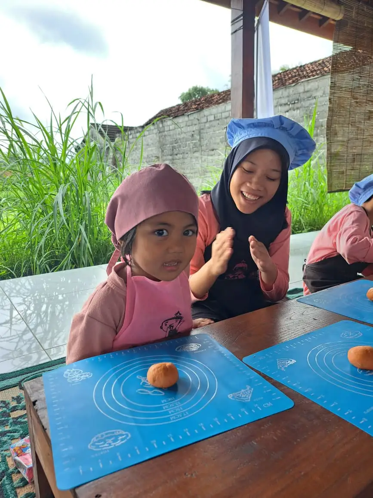

Hiperaktif adalah kondisi di mana seorang anak menunjukkan tingkat aktivitas yang jauh melebihi anak-anak seusianya. Anak yang hiperaktif tampak seolah memiliki energi yang tidak pernah habis: terus bergerak, berlarian, memanjat, sulit duduk tenang, dan sering kali berbicara tanpa henti. Bagi banyak orang tua, menghadapi anak dengan perilaku seperti ini bisa menjadi pengalaman yang sangat melelahkan sekaligus membingungkan.
Penting untuk dipahami bahwa hiperaktif bukanlah tanda kenakalan atau kurangnya pendidikan. Kondisi ini memiliki dasar neurologis yang berkaitan dengan cara otak mengatur impuls, perhatian, dan aktivitas motorik. Di Yayasan Ukhuwah Kaffah Amanatullah (YUKA), kami telah mendampingi banyak keluarga yang menghadapi tantangan serupa melalui Sekolah Inklusi Taruna Imani di Sleman, Yogyakarta.
Artikel ini akan mengupas tuntas tentang apa itu hiperaktif, ciri-ciri yang perlu diwaspadai, penyebab di balik perilaku tersebut, kapan harus berkonsultasi ke dokter, serta strategi penanganan yang efektif baik di rumah maupun di sekolah. Kami juga akan berbagi pengalaman nyata YUKA dalam mendampingi anak-anak hiperaktif agar mampu berkembang optimal.
Daftar Isi
Apa Itu Hiperaktif?
Secara harfiah, hiperaktif artinya aktivitas yang berlebihan atau di atas batas normal. Dalam konteks perkembangan anak, hiperaktif merujuk pada pola perilaku di mana anak menunjukkan gerakan fisik, bicara, dan respons emosional yang jauh melampaui tingkat yang dianggap wajar untuk usianya. Istilah ini berasal dari bahasa Inggris "hyperactive," yang terdiri dari "hyper" (berlebihan) dan "active" (aktif).
Dari sudut pandang medis, hiperaktif didefinisikan sebagai aktivitas motorik yang berlebihan dan tidak sesuai dengan konteks situasi. Artinya, anak tidak hanya aktif saat bermain di luar ruangan (yang memang wajar), tetapi juga menunjukkan kegelisahan dan gerakan berlebihan dalam situasi yang seharusnya tenang, seperti saat di kelas, saat makan bersama keluarga, atau saat menonton film.
Para ahli neurologi menjelaskan bahwa hiperaktif berkaitan erat dengan fungsi neurotransmiter di otak, khususnya dopamin dan norepinefrin. Kedua zat kimia ini berperan penting dalam mengatur perhatian, pengendalian impuls, dan tingkat aktivitas. Ketika produksi atau penyerapan neurotransmiter ini terganggu, anak dapat menunjukkan perilaku hiperaktif.
Perlu ditekankan bahwa ada perbedaan mendasar antara anak yang memang aktif secara alami dan anak yang benar-benar hiperaktif. Anak aktif masih mampu mengendalikan diri ketika situasi mengharuskannya, misalnya duduk tenang saat guru menjelaskan pelajaran. Sementara itu, anak hiperaktif mengalami kesulitan nyata untuk mengendalikan dorongan bergerak, meskipun ia memahami bahwa ia seharusnya duduk diam.
Memahami perbedaan ini sangat penting agar orang tua dan guru tidak terburu-buru melabeli anak yang energik sebagai hiperaktif. Untuk pemahaman yang lebih mendalam tentang berbagai kondisi pada anak berkebutuhan khusus, Anda bisa membaca artikel kami tentang apa itu anak berkebutuhan khusus (ABK).
Tahukah Anda?
Estimasi dari literatur psikiatri menyebutkan sekitar 5-7% anak di seluruh dunia menunjukkan perilaku hiperaktif yang signifikan. Di Indonesia, meskipun data epidemiologis masih terbatas, diperkirakan prevalensinya serupa. Banyak kasus tidak terdiagnosis karena perilaku hiperaktif sering dianggap sebagai bagian normal dari masa kanak-kanak atau dianggap sebagai kenakalan biasa.
Perbedaan Hiperaktif dan ADHD
Salah satu kesalahpahaman paling umum yang sering kami temui di YUKA adalah pencampuradukan antara istilah "hiperaktif" dan "ADHD." Banyak orang tua yang langsung panik ketika melihat anaknya sangat aktif dan menyimpulkan bahwa anaknya pasti mengidap ADHD. Padahal, keduanya memiliki perbedaan yang perlu dipahami.
ADHD (Attention Deficit Hyperactivity Disorder) adalah gangguan perkembangan saraf yang diakui secara resmi dalam DSM-5 (Diagnostic and Statistical Manual of Mental Disorders). ADHD memiliki tiga tipe presentasi:
- Predominantly Inattentive (tipe kurang perhatian): Anak kesulitan memusatkan perhatian, mudah teralihkan, sering lupa, dan sulit mengikuti instruksi bertahap. Tipe ini sering tidak terdeteksi karena anak tidak menunjukkan perilaku hiperaktif yang mencolok.
- Predominantly Hyperactive-Impulsive (tipe hiperaktif-impulsif): Anak menunjukkan aktivitas berlebihan, sulit duduk diam, sering memotong pembicaraan, dan bertindak tanpa berpikir terlebih dahulu. Tipe inilah yang sering disebut "hiperaktif" oleh masyarakat umum.
- Combined Type (tipe gabungan): Anak menunjukkan gejala kurang perhatian sekaligus hiperaktif-impulsif. Tipe ini merupakan presentasi ADHD yang paling sering ditemukan.
Jadi, hiperaktif bisa menjadi salah satu komponen dari ADHD, tetapi tidak semua anak hiperaktif otomatis mengidap ADHD. Sebaliknya, tidak semua anak ADHD menunjukkan perilaku hiperaktif. Ada anak ADHD tipe inattentive yang justru terlihat pendiam dan melamun, tetapi mengalami kesulitan besar dalam memusatkan perhatian.
Selain ADHD, perilaku hiperaktif juga bisa muncul pada kondisi lain seperti gangguan kecemasan, gangguan spektrum autisme, gangguan tidur, atau bahkan sebagai respons terhadap lingkungan yang kurang kondusif. Untuk memahami lebih jauh tentang hubungan antara autisme dan ADHD, silakan baca artikel kami tentang perbedaan autis dan ADHD.

Kesalahan dalam membedakan kedua kondisi ini bisa berakibat fatal. Jika anak hanya aktif secara normal tetapi dilabeli ADHD, ia mungkin mendapat penanganan yang tidak diperlukan. Sebaliknya, jika anak benar-benar mengidap ADHD tetapi perilakunya hanya dianggap sebagai "anak nakal," ia bisa kehilangan kesempatan mendapat intervensi dini yang sangat penting. Untuk pemahaman yang lebih komprehensif tentang ADHD, baca artikel kami tentang apa itu ADHD.
Ciri-Ciri Anak Hiperaktif
Mengenali ciri-ciri anak hiperaktif memerlukan pengamatan yang cermat dan pemahaman tentang tahapan perkembangan normal anak. Perilaku yang dianggap hiperaktif pada usia tertentu mungkin masih normal pada usia lainnya. Berikut adalah ciri-ciri anak hiperaktif berdasarkan kelompok usia:
Ciri Hiperaktif pada Anak Balita (Usia 2-5 Tahun)
Pada usia balita, membedakan antara anak aktif normal dan anak hiperaktif memang cukup menantang karena balita secara alami memang sangat energik. Namun, beberapa tanda berikut perlu diwaspadai:
- Tidak bisa duduk tenang bahkan untuk waktu yang sangat singkat, misalnya saat makan atau saat dibacakan cerita.
- Berlarian terus-menerus tanpa tujuan yang jelas, seolah digerakkan oleh mesin yang tidak bisa dimatikan.
- Memanjat segala sesuatu tanpa memedulikan bahaya, termasuk meja, lemari, atau pagar.
- Sulit mengikuti rutinitas dasar seperti makan, mandi, atau tidur pada jam yang teratur.
- Mudah mengamuk (tantrum) dengan intensitas dan durasi yang berlebihan dibandingkan anak seusianya.
- Sering merusak mainan bukan karena sengaja, melainkan karena cara bermain yang terlalu kasar dan tidak terkendali.
Ciri Hiperaktif pada Anak Usia Sekolah Dasar (Usia 6-12 Tahun)
Ketika anak memasuki usia sekolah, ciri-ciri hiperaktif menjadi lebih jelas karena tuntutan untuk duduk tenang, fokus, dan mengikuti aturan semakin meningkat:
- Tidak bisa duduk di kursi selama pelajaran berlangsung, sering berdiri, berjalan-jalan, atau menggeliat di tempat duduk.
- Sering mengganggu teman tanpa bermaksud buruk, misalnya menyenggol, berbicara keras, atau mengambil barang teman.
- Bicara berlebihan dan sering memotong pembicaraan orang lain, termasuk guru dan teman sebaya.
- Kesulitan menunggu giliran dalam permainan, antrian, atau diskusi kelas.
- Sering kehilangan barang seperti pensil, buku, atau alat tulis lainnya.
- Pekerjaan rumah dan tugas sekolah sering tidak selesai atau dikerjakan dengan ceroboh.
Ciri Hiperaktif pada Remaja (Usia 13 Tahun ke Atas)
Pada usia remaja, gejala hiperaktif sering berubah bentuk. Aktivitas fisik berlebihan mungkin berkurang, tetapi digantikan oleh kegelisahan internal:
- Merasa gelisah secara internal, seperti perasaan tidak nyaman jika harus diam terlalu lama.
- Sering mengetuk-ngetuk jari atau kaki, memainkan pena, atau melakukan gerakan-gerakan kecil berulang.
- Kesulitan dalam pengorganisasian tugas, jadwal, dan tanggung jawab.
- Impulsivitas dalam keputusan, misalnya mengambil risiko yang tidak perlu tanpa mempertimbangkan konsekuensi.
- Berganti-ganti aktivitas dengan cepat dan sulit menyelesaikan satu kegiatan sebelum memulai yang lain.
Jika Anda menemukan beberapa ciri di atas pada anak Anda, jangan langsung panik. Langkah pertama yang tepat adalah melakukan asesmen profesional untuk mengetahui apakah perilaku tersebut memang mengindikasikan hiperaktif atau hanya bagian normal dari perkembangan anak.
Penyebab Anak Hiperaktif
Hiperaktif bukan disebabkan oleh satu faktor tunggal. Para peneliti telah mengidentifikasi bahwa kondisi ini merupakan hasil interaksi kompleks antara faktor genetik, neurologis, dan lingkungan. Memahami penyebab hiperaktif penting agar orang tua tidak merasa bersalah dan bisa fokus pada solusi yang tepat.
1. Faktor Genetik
Penelitian menunjukkan bahwa genetik memainkan peran yang sangat signifikan dalam munculnya perilaku hiperaktif. Studi pada anak kembar identik menemukan bahwa jika satu anak menunjukkan gejala hiperaktif, kemungkinan saudara kembarnya juga mengalami hal serupa mencapai 70-80%. Anak yang memiliki orang tua atau saudara kandung dengan riwayat ADHD atau hiperaktif memiliki risiko 4-5 kali lebih tinggi dibandingkan populasi umum.
Para ilmuwan telah mengidentifikasi beberapa gen yang terkait dengan regulasi dopamin, termasuk gen DAT1 dan DRD4, yang berperan dalam munculnya perilaku hiperaktif. Namun, memiliki gen-gen tersebut tidak berarti anak pasti akan hiperaktif. Gen hanya meningkatkan kerentanan, sementara faktor lingkungan turut menentukan apakah potensi tersebut akan termanifestasi.
2. Faktor Neurologis
Pemindaian otak pada anak-anak hiperaktif menunjukkan beberapa perbedaan struktural dan fungsional dibandingkan dengan anak-anak tanpa kondisi tersebut:
- Korteks prefrontal yang berperan dalam perencanaan, pengambilan keputusan, dan pengendalian impuls tampak kurang aktif pada anak hiperaktif.
- Ganglia basalis, struktur otak yang membantu mengatur gerakan motorik dan pengendalian respons otomatis, menunjukkan volume yang sedikit lebih kecil.
- Ketidakseimbangan neurotransmiter, khususnya dopamin dan norepinefrin, yang menyebabkan otak kesulitan dalam memfilter rangsangan dan mengatur tingkat aktivitas.
- Pematangan otak yang lebih lambat, terutama pada area yang bertanggung jawab untuk pengendalian diri. Beberapa penelitian menunjukkan bahwa perkembangan otak anak hiperaktif tertinggal sekitar 2-3 tahun dibandingkan anak seusianya.
3. Faktor Lingkungan
Beberapa faktor lingkungan juga turut berkontribusi pada munculnya atau memperburuk gejala hiperaktif:
- Paparan toksin selama kehamilan: Ibu yang merokok, mengonsumsi alkohol, atau terpapar logam berat (seperti timbal) selama kehamilan memiliki risiko lebih tinggi melahirkan anak dengan perilaku hiperaktif.
- Kelahiran prematur atau berat badan lahir rendah: Anak yang lahir sebelum waktunya atau dengan berat badan kurang dari 2.500 gram memiliki risiko lebih tinggi mengalami gangguan perkembangan saraf, termasuk hiperaktif.
- Paparan layar berlebihan: Meskipun masih menjadi perdebatan, beberapa penelitian mengaitkan paparan layar yang berlebihan pada usia dini (sebelum 2 tahun) dengan peningkatan risiko perilaku hiperaktif.
- Pola asuh dan lingkungan keluarga: Lingkungan keluarga yang kacau, penuh konflik, atau kurang memberikan struktur dan rutinitas dapat memperburuk gejala hiperaktif pada anak yang sudah memiliki predisposisi genetik.
- Asupan nutrisi: Beberapa penelitian menunjukkan bahwa pewarna makanan buatan, pengawet tertentu, dan asupan gula berlebihan dapat memperburuk gejala hiperaktif pada sebagian anak, meskipun bukan menjadi penyebab utama.

Penting untuk diingat bahwa hiperaktif bukanlah akibat dari pola asuh yang buruk atau kurangnya disiplin. Banyak orang tua yang merasa bersalah dan menyalahkan diri sendiri ketika anaknya didiagnosis hiperaktif. Faktanya, hiperaktif memiliki dasar biologis yang kuat, dan peran orang tua adalah memberikan dukungan dan strategi penanganan yang tepat, bukan menyalahkan diri sendiri. Untuk memahami kondisi anak berkebutuhan khusus secara lebih komprehensif, silakan baca artikel kami tentang apa itu autisme.
Diagnosis dan Pemeriksaan Anak Hiperaktif
Mendiagnosis hiperaktif pada anak bukanlah proses yang sederhana. Tidak ada satu tes laboratorium atau pemeriksaan fisik tunggal yang bisa langsung mengonfirmasi diagnosis ini. Proses diagnosis memerlukan evaluasi menyeluruh dari tim profesional yang melibatkan berbagai aspek perkembangan anak.
Kapan Harus Membawa Anak ke Dokter?
Orang tua sebaiknya mulai mencari bantuan profesional jika menemukan tanda-tanda berikut:
- Perilaku hiperaktif berlangsung minimal selama 6 bulan secara konsisten.
- Perilaku tersebut muncul di lebih dari satu setting, misalnya baik di rumah maupun di sekolah.
- Perilaku tersebut mengganggu fungsi sehari-hari anak, baik dalam bidang akademik, sosial, maupun keluarga.
- Perilaku tersebut tidak sesuai dengan tingkat perkembangan anak. Anak usia 3 tahun yang sangat aktif mungkin masih normal, tetapi anak usia 8 tahun yang tidak bisa duduk tenang selama 10 menit perlu dievaluasi.
- Guru atau pengasuh juga menyampaikan kekhawatiran serupa tentang perilaku anak.
Proses Diagnosis
Proses diagnosis hiperaktif biasanya melibatkan beberapa tahapan:
- Wawancara klinis: Dokter atau psikolog akan melakukan wawancara mendalam dengan orang tua tentang riwayat perkembangan anak, riwayat keluarga, perilaku anak di berbagai situasi, dan dampak perilaku tersebut terhadap kehidupan sehari-hari.
- Observasi langsung: Profesional akan mengamati perilaku anak selama sesi pemeriksaan, baik dalam situasi terstruktur maupun tidak terstruktur.
- Kuesioner dan skala penilaian: Orang tua dan guru diminta mengisi kuesioner standar seperti Conners Rating Scale, Vanderbilt Assessment Scale, atau SNAP-IV untuk memberikan gambaran kuantitatif tentang perilaku anak.
- Tes psikologis: Tes kecerdasan (IQ), tes fungsi eksekutif, dan tes konsentrasi dapat dilakukan untuk mengevaluasi kemampuan kognitif anak dan mengidentifikasi area-area yang perlu mendapat perhatian khusus.
- Pemeriksaan medis: Dokter mungkin melakukan pemeriksaan fisik dan neurologis untuk menyingkirkan kondisi medis lain yang bisa menyerupai gejala hiperaktif, seperti gangguan tiroid, gangguan pendengaran, atau epilepsi.
Di YUKA, kami menyarankan orang tua untuk melakukan asesmen ABK secara menyeluruh sebelum menentukan langkah penanganan. Asesmen yang komprehensif akan memberikan gambaran utuh tentang kekuatan dan tantangan anak, sehingga program intervensi bisa dirancang sesuai kebutuhan spesifik masing-masing anak.
Penting!
Jangan mendiagnosis anak sendiri berdasarkan informasi dari internet. Diagnosis hiperaktif atau ADHD hanya boleh dilakukan oleh profesional yang berkualifikasi, seperti psikolog klinis anak, psikiater anak, atau dokter anak spesialis tumbuh kembang. Diagnosis yang akurat sangat penting untuk menentukan penanganan yang tepat.
Cara Menangani Anak Hiperaktif di Rumah dan Sekolah
Menangani anak hiperaktif memerlukan pendekatan yang komprehensif, konsisten, dan penuh kesabaran. Tidak ada solusi instan atau obat ajaib yang bisa menghilangkan perilaku hiperaktif dalam semalam. Namun, dengan strategi yang tepat, anak hiperaktif bisa belajar mengelola energinya dan berkembang dengan baik.
Strategi di Rumah
Rumah adalah fondasi utama bagi anak hiperaktif untuk belajar mengelola perilakunya. Berikut adalah strategi yang bisa diterapkan orang tua:
- Buat rutinitas harian yang konsisten: Anak hiperaktif sangat terbantu oleh jadwal yang terstruktur dan dapat diprediksi. Buat jadwal harian yang mencakup waktu bangun, makan, bermain, belajar, dan tidur yang tetap setiap hari. Gunakan bantuan visual seperti papan jadwal bergambar agar anak bisa melihat apa yang akan dilakukan selanjutnya.
- Berikan instruksi yang singkat dan jelas: Hindari memberikan instruksi panjang bertahap. Pecah tugas besar menjadi langkah-langkah kecil yang mudah diikuti. Misalnya, alih-alih berkata "Bereskan kamarmu," katakan "Taruh bantal di atas tempat tidur," lalu tunggu sampai selesai sebelum memberikan instruksi berikutnya.
- Terapkan penguatan positif (positive reinforcement): Beri pujian spesifik saat anak berhasil menunjukkan perilaku yang diharapkan. Misalnya, "Mama senang kamu bisa duduk tenang saat makan tadi." Sistem reward sederhana seperti stiker chart juga bisa sangat efektif.
- Sediakan waktu untuk aktivitas fisik: Anak hiperaktif perlu menyalurkan energinya melalui aktivitas fisik yang terstruktur. Berenang, bersepeda, bermain bola, atau bahkan sekadar berlari di taman bisa sangat membantu menurunkan tingkat kegelisahan anak.
- Kurangi paparan layar: Batasi waktu bermain gawai dan menonton televisi. Paparan layar berlebihan dapat memperburuk gejala hiperaktif dan mengganggu kualitas tidur anak.
- Ciptakan lingkungan belajar yang minim distraksi: Sediakan area belajar khusus yang tenang, rapi, dan bebas dari gangguan. Jauhkan mainan, televisi, dan gawai dari area belajar.
- Ajarkan teknik relaksasi: Latih anak teknik pernapasan dalam, progressive muscle relaxation, atau mindfulness sederhana. Teknik ini bisa membantu anak mengenali dan mengelola tingkat energinya.
Strategi di Sekolah
Kolaborasi antara orang tua dan guru sangat penting dalam menangani anak hiperaktif di lingkungan sekolah. Berikut adalah strategi yang bisa diterapkan di sekolah:
- Posisi tempat duduk strategis: Tempatkan anak di baris depan, dekat dengan guru, dan jauh dari jendela atau pintu yang bisa menjadi sumber distraksi.
- Berikan jeda bergerak (movement breaks): Izinkan anak untuk berdiri, meregangkan tubuh, atau melakukan gerakan fisik singkat setiap 15-20 menit. Ini bisa berupa tugas ringan seperti membagikan kertas, menghapus papan tulis, atau sekadar berjalan ke tempat minum.
- Gunakan alat bantu fidget: Bola penghilang stres, karet gelang di pergelangan tangan, atau bantalan duduk bergerak bisa membantu anak menyalurkan kebutuhan bergerak tanpa mengganggu proses belajar.
- Pecah tugas menjadi bagian kecil: Alih-alih memberikan satu lembar kerja penuh, berikan beberapa bagian kecil yang bisa diselesaikan secara bertahap.
- Pendampingan shadow teacher: Untuk kasus yang lebih berat, keberadaan shadow teacher atau guru pendamping khusus bisa sangat membantu anak tetap fokus dan mengikuti kegiatan kelas.
Selain strategi perilaku, beberapa anak hiperaktif juga mendapat manfaat dari pendekatan terapeutik seperti terapi okupasi dan terapi sensori integrasi. Terapi-terapi ini membantu anak mengembangkan kemampuan pengaturan diri dan respons sensorik yang lebih baik.

Pendekatan YUKA untuk Anak Hiperaktif
Di Yayasan Ukhuwah Kaffah Amanatullah (YUKA), kami memiliki pengalaman bertahun-tahun dalam mendampingi anak-anak hiperaktif melalui Sekolah Inklusi Taruna Imani di Sleman, Yogyakarta. Pendekatan kami bersifat holistik, menggabungkan aspek edukasi, terapi, dan pembentukan karakter dalam lingkungan yang inklusif dan penuh kasih sayang.
Program Terstruktur untuk Anak Hiperaktif
Setiap anak yang bergabung di YUKA akan menjalani proses asesmen menyeluruh untuk mengidentifikasi kebutuhan spesifiknya. Berdasarkan hasil asesmen, tim kami menyusun Program Pembelajaran Individual (PPI) yang disesuaikan dengan kekuatan, minat, dan tantangan masing-masing anak.
Program kami untuk anak hiperaktif meliputi:
- Terapi okupasi: Membantu anak mengembangkan keterampilan motorik halus, koordinasi, dan kemampuan pengaturan diri melalui aktivitas fungsional yang bermakna.
- Terapi sensori integrasi: Membantu anak memproses informasi sensorik dengan lebih efektif, sehingga respons terhadap rangsangan lingkungan menjadi lebih teratur dan terkendali.
- Pendampingan shadow teacher: Guru pendamping khusus yang terlatih mendampingi anak selama kegiatan belajar, membantu anak tetap fokus, dan mengajarkan strategi pengelolaan diri.
- Cooking class (kelas memasak): Kegiatan memasak bersama terbukti sangat efektif untuk melatih fokus, kesabaran, dan kemampuan mengikuti instruksi bertahap pada anak hiperaktif.
- Kegiatan seni dan olahraga: Menyalurkan energi berlebih melalui kegiatan yang terstruktur dan positif seperti melukis, bermain musik, senam, dan permainan tradisional.
Kisah Nyata dari YUKA
Salah satu murid kami, sebut saja Rafi (bukan nama sebenarnya), datang ke YUKA pada usia 6 tahun dengan perilaku hiperaktif yang sangat mencolok. Di sekolah sebelumnya, Rafi sering mendapat teguran karena tidak bisa duduk tenang, sering berlarian di kelas, dan mengganggu teman-temannya. Orang tuanya merasa putus asa karena sudah mencoba berbagai cara tanpa hasil yang memuaskan.
Setelah menjalani asesmen dan mengikuti program di YUKA selama satu tahun, perkembangan Rafi sangat signifikan. Ia kini mampu duduk fokus selama 20-30 menit dalam satu sesi belajar, bisa menunggu giliran dengan lebih sabar, dan mulai membangun pertemanan yang positif dengan teman-temannya. Kunci keberhasilannya adalah kombinasi antara terapi sensori integrasi, pendampingan shadow teacher yang konsisten, dan komunikasi yang baik antara tim YUKA dan keluarga Rafi di rumah.
Pentingnya Kolaborasi dengan Orang Tua
Di YUKA, kami sangat menekankan pentingnya kolaborasi antara sekolah dan keluarga. Program penanganan terbaik sekalipun tidak akan berhasil optimal jika tidak didukung oleh konsistensi di rumah. Oleh karena itu, kami secara rutin mengadakan:
- Sesi konsultasi orang tua: Pertemuan berkala antara tim guru, terapis, dan orang tua untuk membahas perkembangan anak dan menyamakan strategi penanganan.
- Pelatihan parenting: Workshop dan seminar tentang cara menangani anak hiperaktif di rumah, teknik komunikasi efektif, dan strategi manajemen perilaku.
- Grup dukungan orang tua: Forum bagi orang tua untuk berbagi pengalaman, saling mendukung, dan belajar dari keluarga lain yang menghadapi tantangan serupa.
Kami percaya bahwa setiap anak, termasuk anak hiperaktif, memiliki potensi luar biasa yang menunggu untuk dikembangkan. Dengan pendekatan yang tepat, lingkungan yang mendukung, dan kesabaran yang konsisten, anak hiperaktif bisa tumbuh menjadi individu yang mandiri, berprestasi, dan bahagia.
FAQ Seputar Hiperaktif pada Anak
1. Apa itu hiperaktif pada anak?
Hiperaktif adalah kondisi di mana anak menunjukkan tingkat aktivitas fisik dan mental yang jauh melebihi anak seusianya. Anak hiperaktif cenderung sulit diam, terus bergerak, banyak bicara, dan kesulitan menunggu giliran. Kondisi ini bukan berarti anak nakal, melainkan berkaitan dengan cara kerja otak dalam mengatur impuls dan aktivitas motorik.
2. Apakah hiperaktif dan ADHD itu sama?
Hiperaktif dan ADHD tidak sama persis. Hiperaktif merujuk pada perilaku aktivitas berlebihan, sedangkan ADHD (Attention Deficit Hyperactivity Disorder) adalah gangguan perkembangan saraf yang lebih luas, mencakup tiga tipe: predominantly inattentive, predominantly hyperactive-impulsive, dan combined type. Hiperaktif bisa menjadi bagian dari ADHD, tetapi tidak semua anak hiperaktif mengidap ADHD.
3. Pada usia berapa hiperaktif bisa dikenali?
Tanda-tanda hiperaktif biasanya mulai terlihat pada usia 2-3 tahun, namun diagnosis formal umumnya dilakukan setelah usia 4-5 tahun ketika anak sudah memasuki lingkungan sekolah. Pada usia tersebut, perbedaan antara anak yang aktif secara normal dan anak yang benar-benar hiperaktif menjadi lebih jelas karena tuntutan untuk duduk tenang dan fokus semakin meningkat.
4. Bagaimana cara menangani anak hiperaktif di rumah?
Cara menangani anak hiperaktif di rumah antara lain: membuat rutinitas harian yang konsisten, menyediakan ruang dan waktu untuk aktivitas fisik, memberikan instruksi singkat dan jelas, menggunakan penguatan positif (reward system), membatasi waktu layar, menyediakan lingkungan yang minim distraksi saat belajar, serta melatih teknik relaksasi sederhana seperti pernapasan dalam. Konsistensi dan kesabaran orang tua sangat penting dalam proses ini.
5. Apakah YUKA menerima anak hiperaktif?
Ya, YUKA menerima anak hiperaktif melalui Sekolah Inklusi Taruna Imani di Sleman, Yogyakarta. Kami menyediakan pendampingan shadow teacher, terapi okupasi, sensori integrasi, dan program kegiatan terstruktur yang dirancang untuk membantu anak hiperaktif belajar mengelola energi, meningkatkan fokus, dan mengembangkan keterampilan sosial. Hubungi kami di +62 812-2991-2332 untuk informasi lebih lanjut.
"Anak hiperaktif bukanlah anak yang rusak atau nakal. Mereka adalah anak-anak dengan energi luar biasa yang membutuhkan arahan, dukungan, dan lingkungan yang tepat untuk berkembang menjadi versi terbaik diri mereka." - Tim YUKA
Artikel Terkait
Sumber Resmi & Referensi Authoritative
Konten artikel ini diperkuat dengan referensi dari lembaga resmi pemerintah dan organisasi kesehatan internasional:
- Kemenkes Yankes: Apa Itu ADHD keslan.kemkes.go.id
- Kemenkes Yankes: Perbedaan Autisme dan ADHD pada Anak keslan.kemkes.go.id
- UU No. 8 Tahun 2016 tentang Penyandang Disabilitas peraturan.bpk.go.id
- Kemenkes Ayo Sehat: Kumpulan Link Penting untuk Anak Disabilitas ayosehat.kemkes.go.id
Disclaimer Medis & Pendidikan: Artikel ini bersifat edukasi umum dan bukan pengganti konsultasi profesional. Untuk diagnosis, asesmen, atau penanganan anak berkebutuhan khusus, silakan konsultasikan langsung dengan dokter anak, psikiater anak, psikolog perkembangan, terapis okupasi, atau tenaga ahli pendidikan khusus yang berlisensi. YUKA Indonesia mendukung pendekatan multidisiplin dan tidak menggantikan peran tenaga medis maupun terapis profesional.